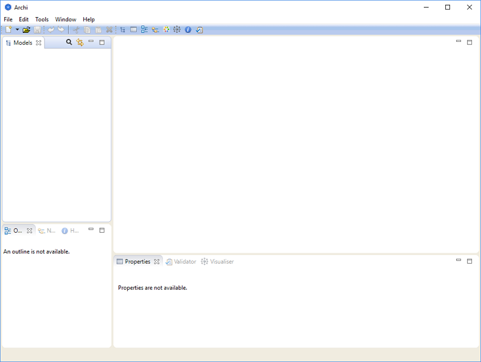

Download the required version from https://www.archimatetool.com
The Windows version has an installer. Run the installer to install Archi to your system. Windows 10 64-bit is supported. The installer simply copies the program files to the target directory and associates *.archimate files with Archi. An uninstaller is also provided.
You can also install Archi manually with a zip installation. Unzip this file and run either the "Archi" or program file. Also included are some Windows batch files - "RegisterFileAssociation.bat" and "UnregisterFileAssociation.bat". The first of these files will register the *.archimate file extension with Archi in the Windows Registry. The second batch file will unregister the file association.
The Mac and Linux versions are packaged in dmg and tgz files respectively. Simply copy the files in the dmg or tgz download and double-click the "Archi" application file to launch the program.
The new, blank Archi workspace looks like the following:
The Default Archi Workspace
The workspace is divided into the following sub-windows:
These sub-windows can be re-arranged by dragging them into new positions, or by dragging them out of the main application window to become detached from the main window.
The various windows may be shown or hidden by selecting the appropriate menu items from the "Window" menu on the main menu bar or from the buttons on the toolbar:

The Windows Toolbar
To reset the Archi window workspace to its default layout, select "Reset Window Layout" from the "Window" menu from the main menu.
You can hide or show the main toolbar by selecting "Hide/Show Toolbar" from the "Window" menu from the main menu.